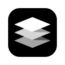
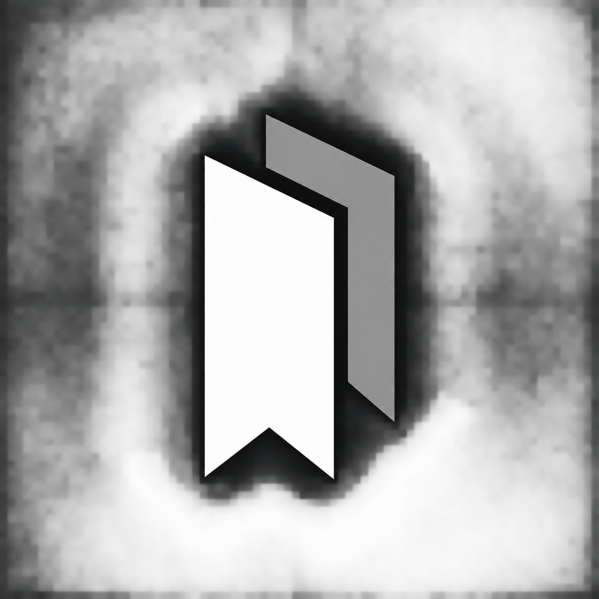
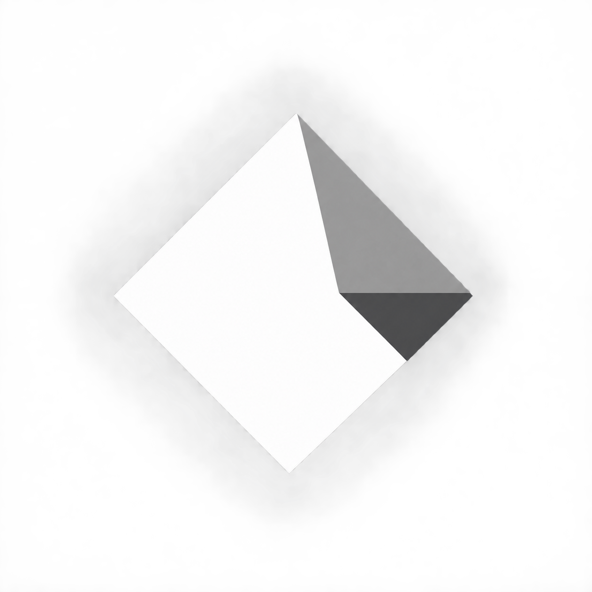
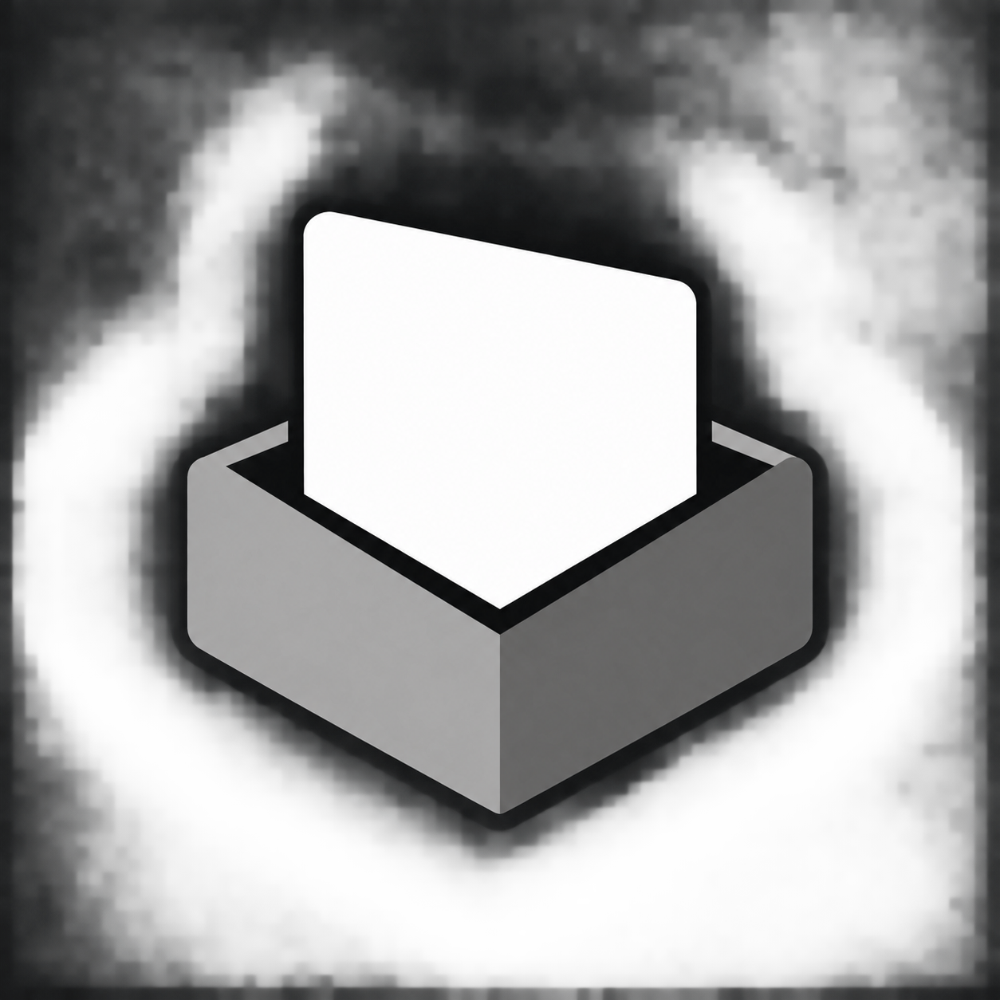
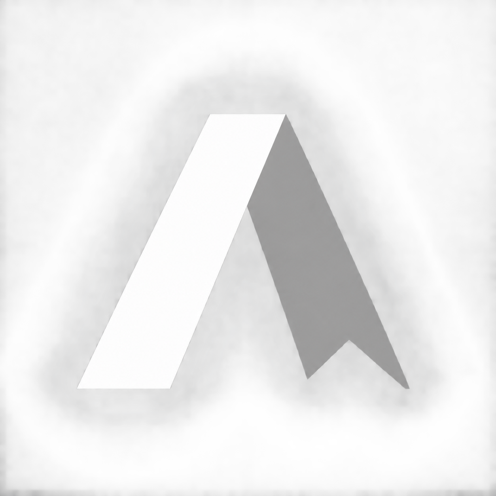

四个方向，统一使用黑白灰与折叠几何。点击大图查看原始候选，也可以直接比较缩小后与 NexAlign 放在一起的效果。


两张叠放的书签，收藏含义最直接。

用折叠纸页连接 NexAlign 的几何语言。

把资料收进一个容器，偏向收藏与整理。

把 A 与书签折带结合，品牌感更强。
A 的收藏含义最直接；D 更适合作为独立品牌符号。选定后会精修矢量轮廓，并适配工具栏的小尺寸和明暗主题。